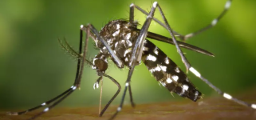
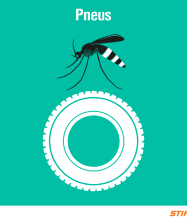

A dengue faz parte de um grupo de doenças denominadas arboviroses, que se caracterizam por serem causadas por
vírus transmitidos por vetores artrópodes. No Brasil, o vetor da dengue é a fêmea do mosquito Aedes aegypti.

Vetor
No Brasil, a primeira epidemia documentada clínica e laboratorialmente ocorreu em 1981-1982, em Boa Vista
(RR), causada pelos sorotipos 1 e 4. Após quatro anos, em 1986, ocorreram epidemias atingindo o estado do
Rio de Janeiro e algumas capitais da região Nordeste. Desde então, a dengue vem ocorrendo de forma
continuada (endêmica), intercalando-se com a ocorrência de epidemias, geralmente associadas à introdução de
novos sorotipos em áreas indenes (sem transmissão) e/ou alteração do sorotipo predominante, acompanhando a
expansão do mosquito vetor.
Sintomas
O doente pode apresentar sintomas como:
Febre
Dor de cabeça
Dores pelo corpo
Náuseas
Porém pode ocorrer de não apresentar nenhum sintoma.
O aparecimento de manchas vermelhas na pele, sangramentos (nariz, gengivas),dor abdominal intensa e contínua
e vômitos persistentes podem indicar um sinal de alarme para dengue hemorrágica. Esse é um quadro grave que
necessita de imediata atenção médica, pois pode ser fatal. É importante procurar orientação médica ao
surgirem os primeiros sintomas. Após a primeira infecção por qualquer sorotipo da dengue é predominantemente
mais grave que a primeira.
Prevenção
A melhor forma de se evitar a dengue é combater os focos de acúmulo de água, locais propícios para a criação
do mosquito transmissor da doença. Para isso, é importante não acumular água em latas, embalagens, copos
plásticos, tampinhas de refrigerantes, pneus velhos, vasinhos de plantas, jarros de flores, garrafas, caixas
d´água, tambores, latões, cisternas, sacos plásticos e lixeiras, entre outros. Ao combater o mosquito
transmissor também se combate outras doenças transmitidas por mosquitos, como Chikungunya, Zika e Febre
amarela.

Tratamento
Somente médicos e cirurgiões-dentistas devidamente habilitados podem diagnosticar doenças, indicar
tratamentos e receitar remédios. Até o momento, não há um remédio eficaz contra o vírus da dengue. No
entanto, o tratamento é realizado a base de analgésicos e antitérmicos e pode ser feito no domicílio, com
orientação para retorno ao serviço de saúde.
Indica-se hidratação oral com aumento da ingestão de água, sucos, chás, soros caseiros etc. Não devem ser
usados medicamentos com ou derivados do ácido acetilsalicílico (AAS) e anti-inflamatórios derivados (como a
dipirona), por aumentar o risco de hemorragias. No que se refere à dengue hemorrágica, o tratamento é
realizado a partir de internação hospitalar do paciente.
Indaiatuba e a Dengue
Segundo dados estatisticos retirados do site https://info.dengue.mat.br a cidade de indaiatuba vem sofrendo com
o costante aumento nos casos de dengue na cidade, estando em alerta devido a crescente incidencias de casos,
é possivel notar que o ano de 2024 no periodo de janeiro a abril tem quatro vezes mais registro de casos do
que o mesmo periodo de 2023